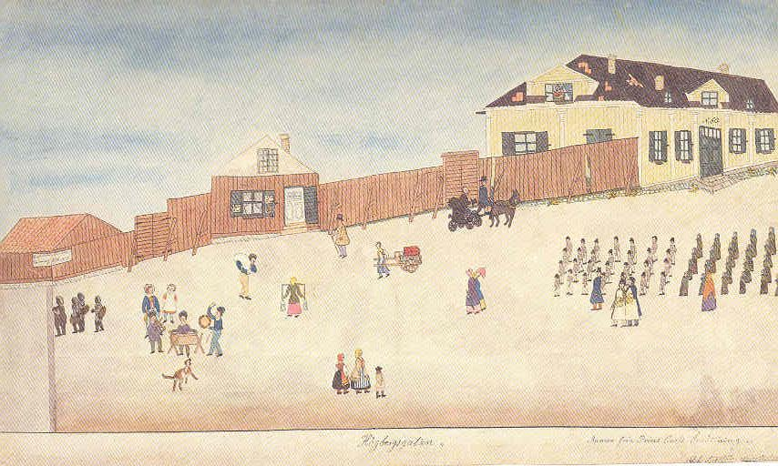

|
Barn på Högbergsgatan Inrättningens barn i sina lillgamla uniformer kommer marscherande från höger på Högbergsgatan, pojkarna anförda av sin lärare, flickorna av sin lärarinna. Från sitt vindskupefönster ses Josabeth i sin fischy blicka ned på ett ekipage där doktor Levin lyfter på sin höga hatt och kusken Löfström saluterar med sin piska. I bildens vänstra hörn mot Timmermansgatan syns gaveln till det lilla magasinet där det skyltas med "bröd, ljus, mjölk (mjölkmaga)" samt den vanligen förekommande bagerikringlan. Där underhåller tre gatumusikanter som beundras av en flicka från bageriet och en högbåtsman. En hund ger skall. En gumma med ok bär två spann mot bageriet, medan en matros bär sin sjösäck. Ytterligare en herre i hög hatt samt två damer i bahytt promenerar under ett parasoll. En typisk dragkärra dras av en bodbetjänt med blått förkläde. I förgrunden ser man två dalkullor, varav en håller ett öga på en liten pojke i livrock med revärer och hatt.
|
Fint iakttaget är det gula huset med vita pilastrar, svartglaserat och frostsprängt taktegel samt
den blandade maskros- och mossgrönskan mellan vägkantens klappstenar. Ur Prins Carls uppfostringsinrättning för fattiga barn 1830-1930. Minnesskrift 1934: "Under sommaren består gossarnas utrustning av tröja, väst och byxor av bomullstyg, bomullsstrumpor och skor samt mössa av svart kalvskinn om söckendagarna och klädesmössa med röd kant på helgdagarna. Flickorna ha om vintrarna grönrandiga yllekjolar, blårutig lärftshalsduk samt ute i staden rödrutiga ylledukar och på huvudet en mindre bomullsduk. Fotbeklädnaden överensstämmer med gossarnas. - Vid utskrivningen från inrättningen till hantverk eller årstjänst lämnas såväl gossar som flickor två omgångar fullständig beklädnad med därtill hörande tvättkläder samt en kista för sakernas förvarande." |
